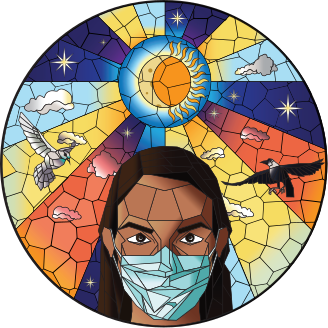
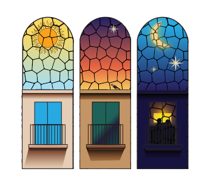

The Stained Glass Window
Client:
Liberty Publishing
Role:
Graphic Design
Year:
2020
Team:
-

The Stained Glass Window is a collection of short stories about the Covid-19 pandemic in Pakistan.
Front Cover
The cover features a woman in a surgical mask rendered in stained glass style surrounded by the sun, moon, clouds, and birds.

